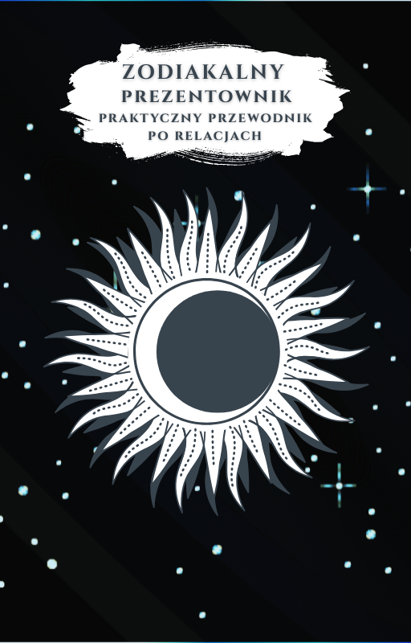

Prezent dla Zodiakary – Jak wybrać podarunek dopasowany do znaku zodiaku?
Jak wybrać idealny prezent dla Zodiakary?
Przestań zgadywać i rozszyfruj ukryte pragnienia za pomocą gwiazd.
Męczy Cię kupowanie nietrafionych prezentów, które lądują na dnie szafy?
Nie wiesz, co kupić na prezent osobie, która ma już dosłownie wszystko?
Chcesz wywołać szczery uśmiech i udowodnić, że naprawdę ją znasz?

Zodiakalny Prezentownik: Poznaj klucz, który
otwiera drzwi do trafionych prezentów...
Wyobraź sobie moment wręczania prezentu. Zamiast wymuszonego uśmiechu, widzisz autentyczny zachwyt i słyszysz: „Skąd wiedziałeś?”
To nie magia ani czytanie w myślach. Idealny prezent to kwestia trafnego odczytania stylu bycia drugiej osoby i jej wrodzonych preferencji, które są zapisane w gwiazdach.
Sztuka obdarowywania nie polega na wydawaniu majątku. Jeśli brakuje Ci pomysłu na prezent, pamiętaj: kluczem jest szczera intencja i absolutna personalizacja upominku.
Astrologia to od wieków zaufany system nawigowania po ludzkim wnętrzu, który precyzyjnie zdradza nam sekrety i ułatwia wybór trafionego prezentu.
Naszą misją jest zawsze trafiony prezent dla Zodiakary
Zodiakalny Prezentownik to najrzetelniejszy w Polsce przewodnik odpowiadający na pytanie: jaki prezent dla zodiakary wybrać.
Nasz e-book opisuje wszystkie 12 znaków zodiaku w barwny i lekko zabawny sposób.
Każdy znak posiada dedykowany rozdział wraz z klarowną strategią doboru upominku i listą rzeczy, których kategorycznie należy się wystrzegać.
Zodiakalny Prezentownik to przede wszystkim świetna inwestycja, która rozwiązuje problem wyboru prezentów dla bliskich na lata!
Co dokładnie zawiera Zodiakalny Prezentownik?
Biblioteka Inspiracji
Poznaj skuteczne strategie oparte na astrologii. Znajdziesz tu sprawdzone i gotowe pomysły na prezent dla Niej, dla Niego, na urodziny czy Święta – na każdą kieszeń.
Analiza każdego znaku
Koniec z domyślaniem się.
Nasz bezbłędny poradnik astrologiczny tłumaczy czego pragnie każdy znak zodiaku i jak przejawia się jego energia.
Błyskawiczny Dostęp
Natychmiastowy dostęp cyfrowy 24/7. Kupujesz teraz i od razu odbierasz pomysły na prezenty online. Twój święty spokój na 365 dni w roku.
Przestań zgadywać, zacznij trafiać.
Przypomnij sobie swój najgorszy prezent, jaki kiedykolwiek otrzymałaś lub otrzymałeś. Co wtedy czułaś bądź czułeś?
Zawód, smutek, złość, niezrozumienie? Pamiętaj, że działa to w dwie strony.
Wręczanie prezentów to w pewnym sensie trudny test w relacji. Kiedy wręczasz komuś nietrafiony podarunek, to tak, jakbyś ten test po prostu oblał.
Czy wiesz, że aż 67% Polaków przyznaje, że dostaje nietrafione prezenty? A część z nich je nawet sprzedaje! Statystyka jest nieubłagana. Wydajemy mnóstwo pieniędzy, a i tak zawodzimy bliskich.
Według badań, na same prezenty gwiazdkowe wydajemy ok. 500 PLN. Dodajmy do tego urodziny, Dzień Ojca, Matki, Babci i Dziadka, Walentynki, Dzień Kobiet i Chłopaka.
Rocznie wydajemy na prezenty 1000, a może nawet 2000 PLN.
A większość z nich to, niestety, całkowita klapa.
Masz przed sobą rozwiązanie.
To ułamek ceny za rozwiązanie problemu nietrafionych prezentów dla Twoich bliskich.
Zodiakalny Prezentownik
Kompletny przewodnik po idealnych prezentach
Wiem, że Internet jest pełen oszustów, dlatego zdejmuję z Ciebie całą odpowiedzialność.
Jeśli Prezentownik zawiedzie Twoje oczekiwania, masz 7 dni na decyzję. Jeśli uznasz, że to nie to – napisz do mnie na adres: kontakt@neoromantyczny.pl, a zwrócę Ci całą kwotę. Bez zbędnych pytań. 🌑✨
* Według badań: „Od rozczarowania do drugiego obiegu. 67% Polaków dostaje nietrafione prezenty, a po świętach rośnie ich odsprzedaż” przeprowadzonego przez Allegro z dnia 29.12.2025 r.
Prezent dla Zodiakary: Jak Wybrać Podarunek Według Żywiołów?
Najczęstszy błąd przy obdarowywaniu pasjonatki astrologii to kupowanie tanich, jarmarcznych gadżetów. Prawdziwa zodiakara docenia psychologiczną głębię, estetykę Quiet Luxury i dopasowanie do żywiołu jej kosmogramu.
Prezent dla zodiakary to podarunek dobrany na podstawie dominującego żywiołu (Ogień, Ziemia, Powietrze, Woda) oraz Wielkiej Trójki (Słońce, Księżyc, Ascendent), a nie powierzchownego horoskopu gazetowego. Prawdziwa pasjonatka astrologii odrzuca masową tandetę (plastikowe breloczki, kubki z marketu). Oczekuje szlachetnych materiałów, autentycznego rzemiosła i symbolizmu, który odzwierciedla jej wewnętrzną naturę.
| Żywioł i Znaki | Profil Psychologiczny | Trafiony Prezent (Pewniak) | Błąd Krytyczny (Faux Pas) |
|---|---|---|---|
|
Żywioł Ognia Baran, Lew, Strzelec |
Dynamiczna energia, potrzeba uznania, pasja i głód mocnych wrażeń. | Niszowe ekstrakty perfum (oud, szafran, czarny pieprz), bilety na premierę, skórzany notatnik. | Banalna świeczka z sieciówki, czysto użytkowe sprzęty, voucher bez dedykacji. |
|
Żywioł Ziemi Byk, Panna, Koziorożec |
Pragmatyzm, zmysłowy dotyk, bezwzględna wrażliwość na jakość wykonania. | Kaszmirowy szal, minimalistyczna biżuteria z naturalnym kamieniem, jedwabna poszewka. | Syntetyczne tkaniny, podróbki marek, przedmioty nietrwałe i tandetne. |
|
Żywioł Powietrza Bliźnięta, Waga, Wodnik |
Głód intelektualny, zmysł estetyczny, wolność i potrzeba oryginalności. | Album o sztuce/designie, słuchawki z redukcją szumów ANC, kosmogram urodzeniowy. | Ciężkie bibeloty zbierające kurz, schematyczne podarunki bez polotu. |
|
Żywioł Wody Rak, Skorpion, Ryby |
Głęboka intuicja, pamięć emocjonalna, przywiązanie do intymnych gestów. | Medalion z konstelacją gwiezdną, niszowy olejek z żywicami, list pisany odręcznie. | Chłodny przelew bankowy, plastikowe gadżety, prezent kupiony w pośpiechu. |
Co kupić na prezent dla zodiakary?
Najlepszy prezent to przedmiot dopasowany do jej dominującego żywiołu i Wielkiej Trójki (Słońce, Księżyc, Ascendent). Wybieraj niszowe perfumy, biżuterię z naturalnymi kamieniami szlachetnymi, profesjonalny kosmogram lub jedwabną apaszkę z motywem konstelacji.
Czego kategorycznie NIE kupować zodiakarze?
Unikaj masowej tandety: kubków z nadrukiem znaku z supermarketu, tanich syntetycznych świec zapachowych, plastikowych breloczków czy horoskopów z gazet. Prawdziwa pasjonatka natychmiast wyczuwa brak zaangażowania.
Dlaczego sam znak słoneczny to za mało, by dobrać idealny prezent?
Znak słoneczny odpowiada za zaledwie 30% osobowości. O rzeczywistym guście estetycznym decyduje znak Wenus, o komforcie i relaksie znak Księżyca, a o stylu ubioru i pierwszym wrażeniu – Ascendent.
Szukasz prezentu dla konkretnego znaku zodiaku?
Każdy znak zodiaku rządzi się inną psychologią żywiołu i planety patronującej. Wybierz znak poniżej, aby przeczytać szczegółowy przewodnik prezentowy, albo pobierz kompletny Zodiakalny Prezentownik powyżej.
Prezent dla Barana
Adrenalina, rywalizacja i marsowy impuls
Prezent dla Byka
Zmysłowy luksus, kaszmir i patronat Wenus
Prezent dla Bliźniąt (Znak Zodiaku)
Intelekt, gadżety i merkuriańska ciekawość
Prezent dla Raka (Znak Zodiaku)
Sentyment, domowy azyl i opieka Księżyca
Prezent dla Lwa
Królewski blask, prestiż i energia Słońca
Prezent dla Panny (Znak Zodiaku)
Perfekcja, czysty skład i użyteczny minimalizm
Prezent dla Wagi
Harmonia, design i wenusjańska estetyka
Prezent dla Skorpiona
Tajemnica, głębia i hipnotyzujący charakter
Prezent dla Strzelca (Znak Zodiaku)
Wolność, wyprawy i jowiszowe horyzonty
Prezent dla Koziorożca
Prestiż, jakość rzemiosła i saturniczny kunszt
Prezent dla Wodnika
Innowacja, niszowy design i wizja przyszłości
Prezent dla Ryb
Mistyczna wrażliwość, sztuka i neptuniczna głębia